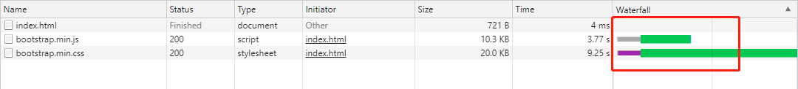

高性能JavaScript
第一章 加载和执行
js文件下载过程不会阻塞其他文件，但是解析过程会阻塞
这一点文中及很多博客都表述不正确

拓展：CSS解析时会阻塞DOM解析
script标签合并，将数个资源请求合并，减少HTTP次数
defer与async区别
- 无：立即加载并执行脚本，执行时阻塞
- defer：资源加载后，在DOMContentLoaded事件触发后执行，多个defer按照加载顺序执行
async：脚本加载完后立即执行，乱序执行

先加载必须项，再加载非必须项，且放置到body尾部，防止阻塞body解析